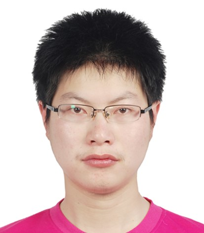

|  | Associate Professor |
I received the B.S. degrees in mathematics and applied mathematics and the M.Eng. and Ph.D. degree in computer science from[Anhui University] of China in 2009, 2012, and 2015, respectively. I am currently an associate professor in [School of Computer Science and Technology] at [Anhui University].
My current research interests include image matching, graph data representation and learning and few-shot learning. I have published more than 60 papers including 30 papers in top conference and journal such as CVPR, NeurIPS, IJCV, IEEE TPAMI, IEEE TIP and IEEE TNNLS. He gained some research projects of NSFC and Natural Science Foundation of Anhui Province. He also received the rising star award of ACM Hefei.
欢迎对科研感兴趣，编程能力强，基础扎实，善于思考和钻研，认真负责的学生报考本人研究生；欢迎学有余力的本科生参与科研项目实践；有意者请随时与我联系!
Object Tracking: Single-, Multi-Object Tracking
Multi-modal: Vision-Language, Vision-Thermal (Infrared), Vision-Depth, Vision-Event, Vision-Audio
Neuromorphic Vision: Detection and Tracking, Action Recognition, Scene Reconstruction
AMatFormer: Efficient Feature Matching via Anchor Matching Transformer
Bo Jiang, Shuxian Luo, Xiao Wang*, Chuanfu Li and Jin Tang
IEEE Transactions on Multimedia (TMM) 2023
[arXiv]
[IEEE]
Rethinking Batch Sample Relationships for Data Representation: A Batch-Graph Transformer based Approach
Xixi Wang, Bo Jiang, Xiao Wang, Bin Luo
IEEE Transactions on Multimedia (TMM) 2023,
[arXiv]
[IEEE]
2022-2023 秋学期 MATLAB 编程基础
2022-2023 秋学期 数据挖掘与知识发现
2022-2023 春学期 机器学习
2022-2023 春学期 计算机伦理
2022.05.22 IEEE Member (Member number: 96976176)
2022.05.30 CSIG Member (Member number: E654403548M)
Postdoctoral Innovative Talent Support Program (BX20200174, 2021-2022)
China Postdoctoral Science Foundation Funded Project (2020M682828, 2021-2022)
National Natural Science Foundation of China (编号：62102205, 名称：面向神经形态视觉的目标跟踪关键技术研究, 2022-2024)